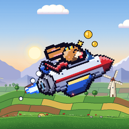

ShipJumps
Saute, esquive et traverse 22 mondes en pixel art face aux machines du Pr Krank.
Jump, dodge and fly through 22 pixel-art worlds against Professor Krank's machines.
Des jeux qui font germer l'imaginaire

Saute, esquive et traverse 22 mondes en pixel art face aux machines du Pr Krank.
Jump, dodge and fly through 22 pixel-art worlds against Professor Krank's machines.